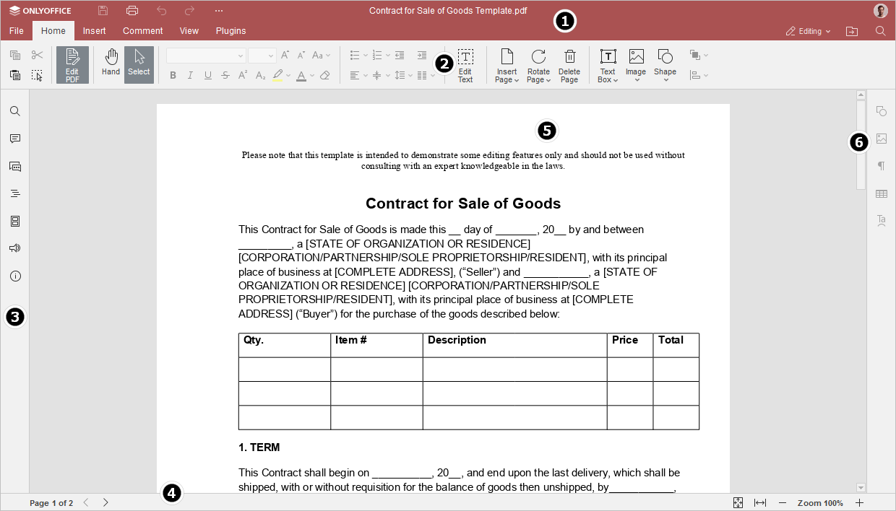
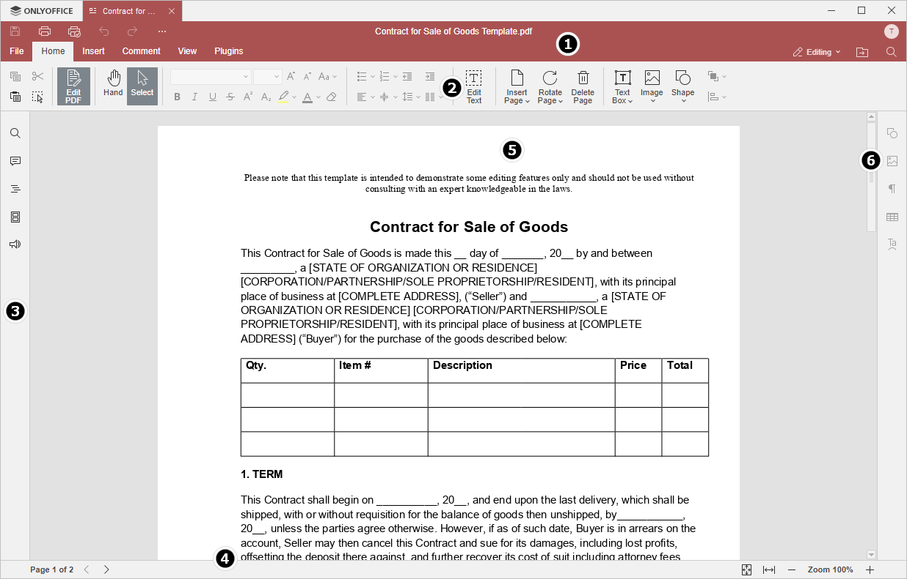

Uvod u korisnički interfejs PDF Uređivača
PDF Uređivač koristi interfejs sa karticama, gde su komande za uređivanje grupisane prema funkcionalnosti.
Glavni prozor Online PDF Uređivača:

Glavni prozor Desktop PDF Uređivača:

Interfejs uređivača se sastoji od sledećih glavnih elemenata:
-
Zaglavlje uređivača prikazuje ONLYOFFICE logo, kartice za sve otvorene dokumente sa njihovim imenima i meni karticama.
Sa leve strane zaglavlja uređivača nalaze se dugmad Sačuvaj, Štampaj fajl, Poništi i Ponovi.
Sa desne strane zaglavlja uređivača, pored korisničkog imena, prikazane su sledeće ikone:
- Otvori lokaciju fajla - u desktop verziji otvara folder gde je fajl sačuvan u prozoru File explorer. U online verziji otvara folder modula Dokumenti, gde je fajl sačuvan, u novom tabu pregledača.
- Pretraga - omogućava pretragu PDF-a prema reči, simbolu itd.
-
Gornja alatna traka prikazuje komande za uređivanje u zavisnosti od izabrane kartice menija. Dostupne su sledeće kartice: Fajl, Početna, Komentari, Umetanje, Prikaz, Dodaci.
Opcije Kopiraj, Zalepi, Iseci i Izaberi sve su uvek dostupne sa leve strane gornje alatne trake, kao i alati Izbor i Ruka.
-
Levi bočni panel sadrži sledeće ikonice:
- - omogućava korišćenje alata za Pretragu i zamenu.
- - otvara panel za Komentare.
- - (samo u online verziji) otvara panel za Ćaskanje.
- - otvara panel Naslovi sa listom svih naslova i njihovim nivoima.
- - prikazuje sličice stranica za brzu navigaciju.
- - (samo u online verziji) omogućava kontaktiranje tima za podršku.
- - (samo u online verziji) prikazuje informacije o programu.
- Statusna traka na dnu prozora urednika prikazuje broj stranice i obaveštenja (npr. "Sve promene sačuvane", "Veza je izgubljena" pri padu veze itd.). Takođe omogućava podešavanje zuma.
- Radni prostor omogućava prikaz, unos i uređivanje sadržaja PDF-a.
- Traka za skrolovanje sa desne strane omogućava pomeranje kroz višestranične PDF-ove.
Radi vaše udobnosti, možete sakriti ili prikazati pojedine komponente po potrebi. Više o podešavanju prikaza saznajte na ovoj stranici.